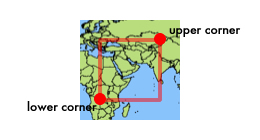

Geography Markup Language (GML) is an XML grammar written in XML Schema for the modelling, transport, and storage of geographic information...GML provides a variety of kinds of objects for describing geography including features, coordinate reference systems, geometry, topology, time, units of measure and generalized values. A geographic feature is "an abstraction of a real world phenomenon; it is a geographic feature if it is associated with a location relative to the Earth?. So a digital representation of the real world can be thought of as a set of features.
- OGC GML Working Group
Here we present the encoding of GeoRSS' objects in a simple GML version 3.1.1 profile. Each section details the construction of GeoRSS' five objects, followed by some informative use cases. As with all GeoRSS encodings, if not specified, the implied coordinate reference system is WGS84 with coordinates written in decimal degrees.
Point
Line
Polygon
Box
Examples
Coordinate Reference Systems
GML Application Schema
A point consists of a <Point> element with a child <coords> element. Within <coords> the latitude and longitude values are separated by a space.
<?xml version="1.0" encoding="utf-8"?>
<feed xmlns="http://www.w3.org/2005/Atom"
xmlns:georss="http://www.georss.org/georss"
xmlns:gml="http://www.opengis.net/gml">
<title>Earthquakes</title>
<subtitle>International earthquake observation labs</subtitle>
<link href="http://example.org/"/>
<updated>2005-12-13T18:30:02Z</updated>
<author>
<name>Dr. Thaddeus Remor</name>
<email>tremor@quakelab.edu</email>
</author>
<id>urn:uuid:60a76c80-d399-11d9-b93C-0003939e0af6</id>
<entry>
<title>M 3.2, Mona Passage</title>
<link href="http://example.org/2005/09/09/atom01"/>
<id>urn:uuid:1225c695-cfb8-4ebb-aaaa-80da344efa6a</id>
<updated>2005-08-17T07:02:32Z</updated>
<summary>We just had a big one.</summary>
<georss:where>
<gml:Point>
<gml:pos>45.256 -71.92</gml:pos>
</gml:Point>
</georss:where>
</entry>
</feed>
A line consists of a <LineString> element with a child <coordList> element. Within <coordList> the coordinates of the points on the line are entered as pairs of latitude and longitude values, separated by spaces. There must be at least two pairs. No two pairs may be separated by more than 179 degrees in either latitude or longitude.
<entry>
...
<georss:where>
<gml:LineString>
<gml:posList>
45.256 -110.45 46.46 -109.48 43.84 -109.86
</gml:posList>
</gml:LineString>
</georss:where>
</entry>
A polygon consists of a <Polygon> element with a child <exterior>, <LinearRing> and <coordList> elements. There must be at least four pairs with the last being identical to the first. (a boundary has a minimum of three actual points.) No two pairs may be separated by more than 179 degrees in either latitude or longitude.
<entry>
...
<georss:where>
<gml:Polygon>
<gml:exterior>
<gml:LinearRing>
<gml:posList>
45.256 -110.45 46.46 -109.48 43.84 -109.86 45.256 -110.45
</gml:posList>
</gml:LinearRing>
</gml:exterior>
</gml:Polygon>
</georss:where>
</entry>
<Exterior> specifies this shape as defining the outside of an area, and <LinearRing> states that the coordinates should be connected with straight lines. Within <coordList> the coordinates of the points are entered as pairs of latitude and longitude values, separated by spaces. There must be at least four pairs with the last being identical to the first. (a polygon has a minimum of three actual points.) No two pairs may be separated by more than 179 degrees in either latitude or longitude.
A bounding box defines a rectangular region. It is often used to define the extents of a map or define a rough area of interest. A GML box is called an Envelope. It consists of an <Envelope> element with a child <lowerCorner> element and a child <upperCorner> element.

<entry> ... <georss:where> <gml:Envelope> <gml:lowerCorner>42.943 -71.032</gml:lowerCorner>
<gml:upperCorner>43.039 -69.856</gml:upperCorner>
</gml:Envelope> </georss:where> </entry>
A good way to describe a trip that has many places of interest like a boat trip or a hike is to specify the overall trip's path with a line as a child of the <feed>. Then mark each location of interest with a point in the <entry>.
<feed xmlns="http://www.w3.org/2005/Atom"
xmlns:georss="http://www.georss.org/georss"
xmlns:gml="http://www.opengis.net/gml">
<title>Dino's Mt. Washington trip</title>
<link href="http://www.myisp.com/dbv/"/>
<updated>2005-12-13T18:30:02Z</updated>
<author>
<name>Dino Bravo</name>
<email>dbv@example.org</email>
</author>
<id>http://www.myisp.com/dbv/</id>
<georss:where>
<gml:LineString>
<gml:posList>
45.256 -110.45 46.46 -109.48 43.84 -109.86 45.8 -109.2
</gml:posList>
</gml:LineString>
</georss:where>
<entry>
<title>Setting off</title>
<link href="http://www.myisp.com/dbv/1"/>
<id>http://www.myisp.com/dbv/1</id>
<updated>2005-08-17T07:02:32Z</updated>
<content>getting ready to take the mountain!</content>
<georss:where>
<gml:Point>
<gml:pos>45.256 -110.45</gml:pos>
</gml:Point>
</georss:where>
</entry>
<entry>
<title>Crossing Muddy Creek</title>
<link href="http://www.myisp.com/dbv/2"/>
<id>http://www.myisp.com/dbv/2</id>
<updated>2005-08-15T07:02:32Z</updated>
<content>Check out the salamanders here</content>
<georss:where>
<gml:Point>
<gml:pos>45.94 -74.377</gml:pos>
</gml:Point>
</georss:where>
</entry>
</feed>
<feed xmlns="http://www.w3.org/2005/Atom"
xmlns:georss="http://www.georss.org/georss"
xmlns:gml="http://www.opengis.net/gml">
<title>Cambridge Calendar of Events</title>
<subtitle>Goings on around Cambridge</subtitle>
<link href="http://example.org/"/>
<updated>2005-12-13T18:30:02Z</updated>
<author>
<name>Arty "the one man party" Collins</name>
<email>apcollins@cambridgema.gov</email>
</author>
<id>http://www.cambridgema.gov/calendar</id>
<georss:where>
<gml:Polygon>
<gml:exterior><gml:LinearRing>
45.256 -110.45 46.46 -109.48 43.84 -109.86
45.8 -109.2 45.256 -110.45
</gml:LinearRing></gml:exterior>
</gml:Polygon>
</georss:where>
<entry>
<title>City Council Meeting</title>
<link href="http://www.cambridgema.gov/calendar/2005/09/09/evt01"/>
<id>http://www.cambridgema.gov/calendar/2005/09/09/evt01</id>
<updated>2005-08-17T07:02:32Z</updated>
<content>Regular weekly meeting</content>
<georss:where>
<gml:Point>
<gml:pos>45.256 -110.45</gml:pos>
</gml:Point>
</georss:where>
</entry>
<entry>
<title>NoCa Arts Open House</title>
<link href="http://www.cambridgema.gov/calendar/2005/09/12/evt02"/>
<id>http://www.cambridgema.gov/calendar/2005/09/12/evt02</id>
<updated>2005-08-15T07:02:32Z</updated>
<content>North Cambridge arts festival featuring local artists</content>
<georss:where>
<gml:Point>
<gml:pos>45.94 -74.377</gml:pos>
</gml:Point>
</georss:where>
</entry>
</feed>
A lot of data out in the world doesn't come in latitude/longitude coordinates. It's in UTM or Stateplane or some other coordinate reference system. Why? Because lat/lon just isn't very good when you care about inches or centimeter accuracy. And thank goodness engineers building roads and bridges, and surveyors measuring your property boundaries care very much.
If your GeoRSS GML data is in a coordinate reference system other than lat/lon WGS84 (often technically referred to as EPSG:4236), add in an srsName attribute to your geometry.
The key thing here is to use CRS epsg:4979, specify the srsDimension attribute, and include a third number in your coordinate tuple.
<entry>
...
<georss:where>
<gml:Point srsName="urn:ogc:def:crs:EPSG:9.0:4979" srsDimension="3">
<gml:pos>42.3453 -156.2342 45</gml:pos>
</gml:Point>
</georss:where>
</entry>
26986 is the Stateplane system for Massachusetts Mainland
<entry>
...
<georss:where>
<gml:Polygon srsName="urn:ogc:def:crs:EPSG:9.0:26986">
<gml:exterior>
<gml:LinearRing>
<gml:posList>
45.256 -110.45 46.46 -109.48 43.84 -109.86 45.256 -110.45
</gml:posList>
</gml:LinearRing>
</gml:exterior>
</gml:Polygon>
</georss:where>
</entry>
All good information encodings should be backed by a formal definition. In this case, we use XML schema to do the job. This helps software developers--especially XML-savvy ones, know the full capabilities of the language, and program their software to handle any case, not just those they've come across in examples.
GML is a large and complex language which is also defined by XML schema. Since it is so large, a practice has emerged to define subsets of GML, called Profiles, that contain only those elements of GML needed for the encoding job at hand.
Here is our GeoRSS GML Profile [http://www.georss.org/xml/1.0/gmlgeorss.xsd].
We also have a rather large graphic of the UML model for this profile.
The application schema defines <georss:where> as the tag that signals geographic content--either in GeoRSS Simple or GML.
Here is our GeoRSS Application Schema [http://www.georss.org/xml/1.0/georss.xsd].
The UML model is shown below. Click on it for a larger, more readable version.